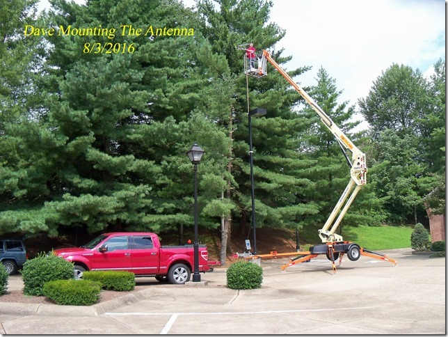
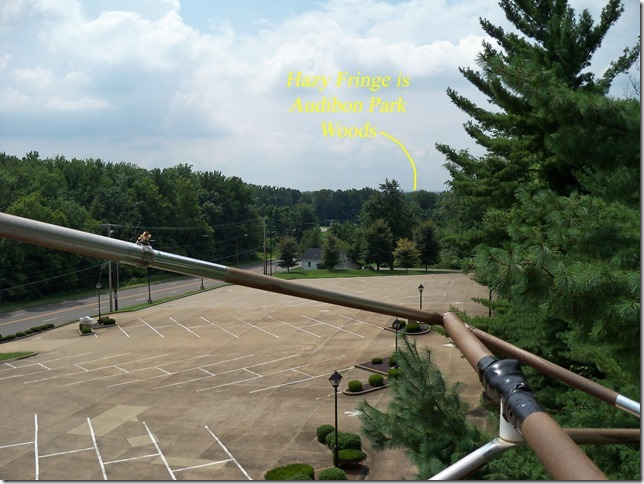
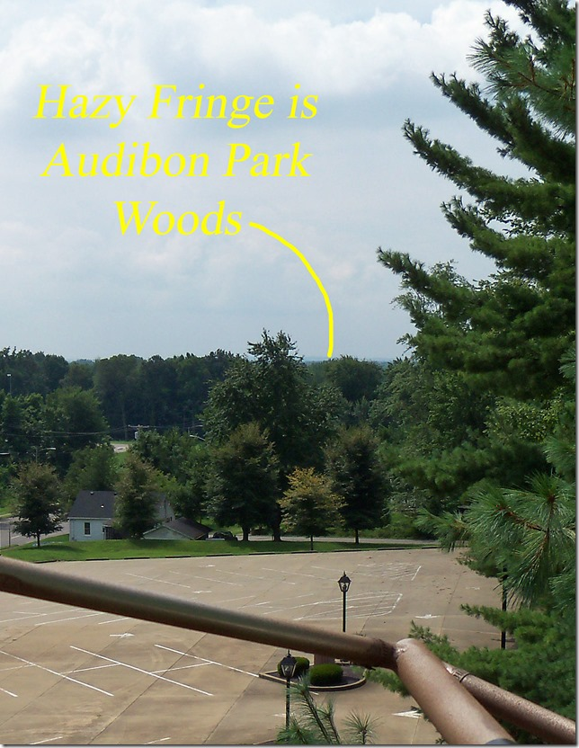
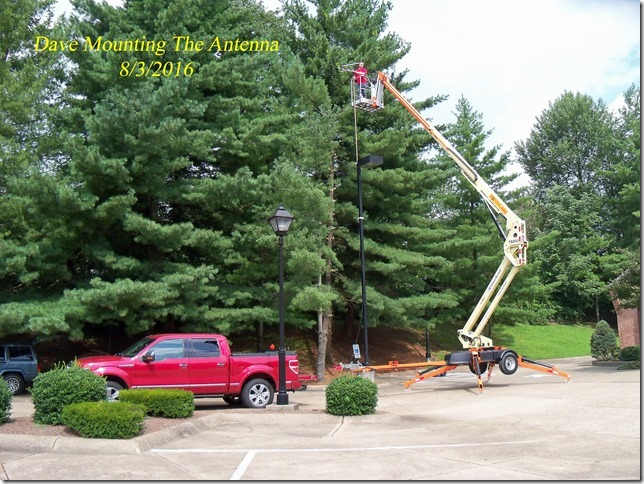
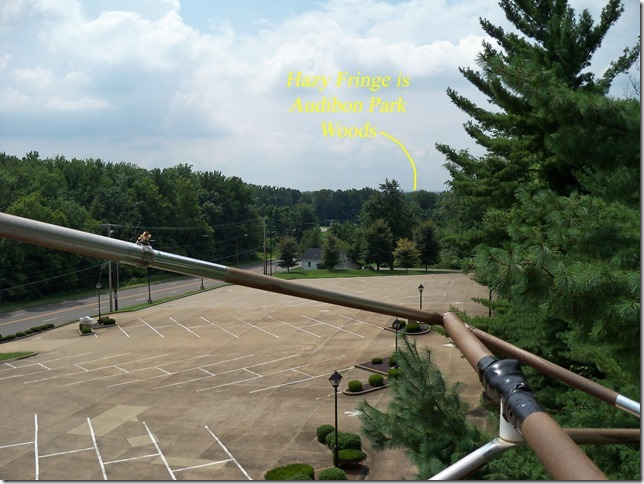
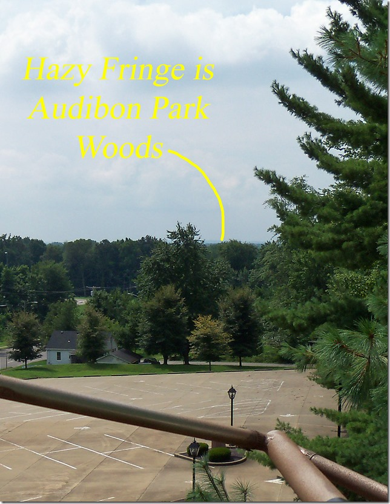

Our Story
From Humble Beginnigs
Most of our equipment was the result of donations

Installation day
  We recieved approval from the Bishop on the 27th of September and began to broadcast a little bit later

Most of our equipment was the result of donations
Installation day
  We recieved approval from the Bishop on the 27th of September and began to broadcast a little bit later